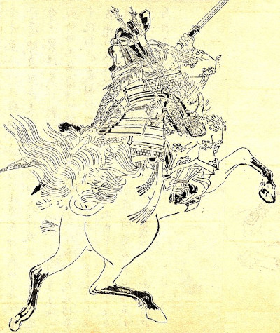

A maioria dos temíveis guerreiros do Japão era representada por homens. No entanto, havia algumas mulheres que resistiam às normas sociais para se tornarem combatentes habilidosas e fatais. Tomoe Gozen, definitivamente, foi uma delas. A sua história é envolta em mistério, mas era conhecida por ser bonita e implacável. O que realmente impressiona na sua lenda não é apenas o fato de ser uma samurai do gênero feminino, mas também de ser uma guerreira de elite. Você não gostaria de cruzar o caminho de Tomoe Gozen. De fato, mesmo antes da ascensão dos samurais, havia mulheres japonesas que treinavam para proteger suas casas e famílias das forças invasoras. Eram conhecidas como onna-bugeisha, que literalmente significa “mulher guerreira”.
Elas usavam kaiken, um pequeno punhal carregado apenas por samurais, e naginata, uma espada com uma longa e curva lâmina. Esta última tornou-se o símbolo mais fortemente associado à onna-bugeisha. Filhas de samurais levariam uma naginata para seu lar conjugal como parte de seu dote.

(Tomoe Gozen - retratada por Kikuchi Yōsai.)
A lenda de Tomoe Gozen
Apesar de Tomoe Gozen ser uma das lutadoras mais famosas do Japão, grande parte de sua história é baseada em lendas e não em fatos concretos. Uma das principais fontes de informação sobre a história de Tomoe é a Heike monogatari, uma compilação de contos da épica saga histórica por volta de 1240.
Reza a lenda que existia certa rivalidade entre duas famílias: a Taira, também conhecida como a Heike, e a Minamoto. Tomoe era a samurai de um general de Minamoto: Kiso Yoshinaka. Dizem que ela pessoalmente comandou cerca de mil soldados.
Tomoe não era tecnicamente uma onna-bugeisha, mas uma onna-musha. Ou seja, uma mulher que fazia parte da ação no campo de batalha em vez de estar na defensiva. Ela não era a única: evidências arqueológicas sugerem que as mulheres compunham uma porcentagem maior de exércitos japoneses do que se pensava anteriormente.
De acordo com Heike monogatari, Tomoe “tinha longos cabelos negros e pele clara. Seu rosto era muito lindo”. Além disso, ela era uma cavaleira destemida, que nem o cavalo mais feroz nem o mais duro podia consternar. Manipulava a espada e a reverência que era páreo para mil guerreiros, capaz de se encontrar com deus ou demônio.
Batalhas e conquistas de Tomoe Gozen
Yoshinaka reivindicou algumas vitórias importantes na Guerra de Genpei, entre 1180 e 1185. Mas, infelizmente, seu sucesso e habilidades de liderança fizeram com que sua própria família se voltasse contra ele. Em 1184, seu exército foi dizimado. Fugira da capital Kyoto com apenas cinco ou seis guerreiros, incluindo Tomoe
De acordo com uma história, Tomoe encontrou dois renomados generais inimigos durante este retiro. Ela derrotou o primeiro, Hatakeyama, de forma implacável. Inclusive, ele decidiu fugir porque não queria que ninguém soubesse da sua derrota pelas mãos de uma mulher. Tomoe também venceu a batalha conta Uchida, decapitando-o.
O que aconteceu com Tomoe depois dessas batalhas? Em uma versão, ela escapou do campo de batalha aos 28 anos e se tornou uma freira budista que acabou morrendo aos 90 anos. De acordo com a edição estendida da Heike monogatari, Tomoe Gozen foi presa por Wada Yoshimori.
Em outro relato, Tomoe foi em uma missão de vingança e matou todos os inimigos de Yoshinaka. Tudo isso antes de entrar no mar para que ninguém pudesse profaná-la. De qualquer maneira, a lenda de seus feitos corajosos e brutais continua viva. Há uma peça do século XV sobre a guerreira, que acontece em outubro de todos os anos, no Festival das Eras de Kyoto.
Ela também já apareceu na trilogia de ficção científica e fantasia de Jessica Salmonson, The Tomoe Gozen Saga. Além disso, foi interpretada por Jeananne Goossen em Riverworld, uma minissérie que foi ao ar em 2010.